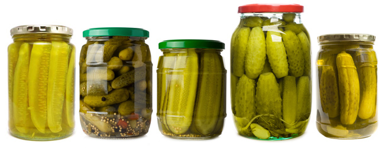

Getting Out of a Pickle with Pickle

The Problem
One of the problems with writing functions for scraping data is that in the process while testing you may have to do multiple calls of the scraping program. And when you are sometimes makes hundreds, if not thousands, or even far more calls, there's not only a chance that your requests might get denied, but it just takes a long time! The function in yesterday's entry returns a list of about 15,000 movies and takes about 30 seconds to run. But some of the other functions I wrote to collect data from each of those 15,000 movies takes nearly 30 minutes to run if not more.
One Solution: Pickle
Pickle is a Python module for data serialization. That's basically a fancy way of saying it's a library of code that helps you transform data into a format that's easily storable. So for our uses, I'll use pickle to take that list of movies and put it into an external .pkl file (pickle file format) that I can call back later.
Getting Started
The first step in using Pickle is to import it (and probably a url library with it for scraping)
import pickle
import urllib2
The code I defined in the last entry was a function called get_all_movies(). And it returns the list. So I'll set this equal to a variable that will store the scraped list.
movie_list = get_all_movies()
Storing Values
Next, we use some Pickle syntax to store the data into a file called movie_list.pkl that we'll store right in the same directory for easy access. The second argument "w" stands for "write" because we'll be writing (and creating) the pickle file with the dump function.
with open('movie_list.pkl', 'w') as f:
pickle.dump(movie_list, f)
Retrieving Values
Now, at this point we can delete the list or not, it doesn't matter. Because we can retrieve it now at any point because it is now stored in an external file. So how do we retrieve it? We use the same function except now with an "r" argument, which as you might be able to guess, stands for "read".
with open('movie_list.pkl', 'r') as f:
movie_list = pickle.load(f)
Basically, the function now transforms it back to a format that Python can interpret. And now, if you print movie_list you'll see the same list as before and you are free to iterate through it.